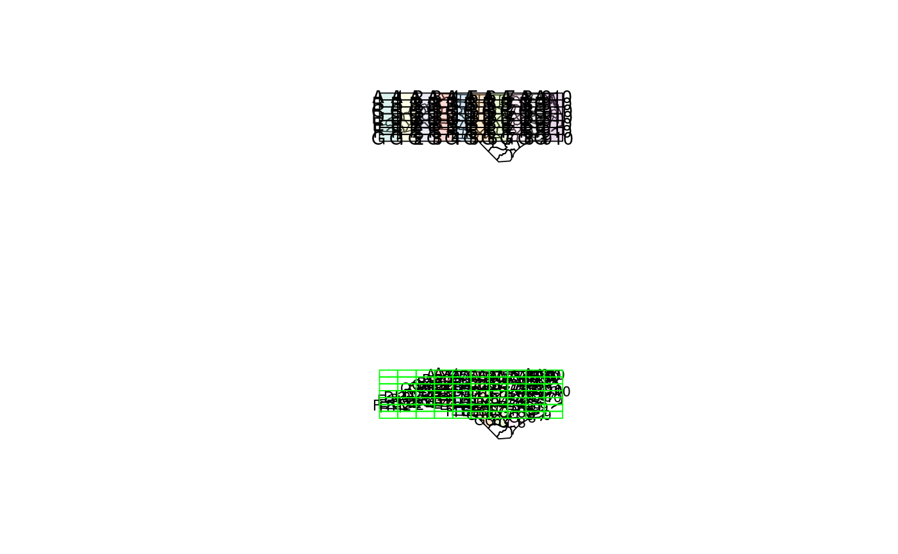

spatial left or inner join
st_join(x, y, join = st_intersects, FUN, suffix = c(".x", ".y"), ..., left = TRUE, largest = FALSE)
| x | object of class |
|---|---|
| y | object of class |
| join | geometry predicate function with the same profile as st_intersects; see details |
| FUN | deprecated; |
| suffix | length 2 character vector; see merge |
| ... | arguments passed on to the |
| left | logical; if |
| largest | logical; if |
an object of class sf, joined based on geometry
alternative values for argument join are: st_disjoint
st_touches st_crosses st_within st_contains
st_overlaps st_covers st_covered_by st_equals or
st_equals_exact, or user-defined functions of the same profile
a = st_sf(a = 1:3, geom = st_sfc(st_point(c(1,1)), st_point(c(2,2)), st_point(c(3,3)))) b = st_sf(a = 11:14, geom = st_sfc(st_point(c(10,10)), st_point(c(2,2)), st_point(c(2,2)), st_point(c(3,3)))) st_join(a, b)#> Simple feature collection with 4 features and 2 fields #> geometry type: POINT #> dimension: XY #> bbox: xmin: 1 ymin: 1 xmax: 3 ymax: 3 #> epsg (SRID): NA #> proj4string: NA #> a.x a.y geom #> 1 1 NA POINT (1 1) #> 2 2 12 POINT (2 2) #> 2.1 2 13 POINT (2 2) #> 3 3 14 POINT (3 3)st_join(a, b, left = FALSE)#> Simple feature collection with 3 features and 2 fields #> geometry type: POINT #> dimension: XY #> bbox: xmin: 2 ymin: 2 xmax: 3 ymax: 3 #> epsg (SRID): NA #> proj4string: NA #> a.x a.y geom #> 2 2 12 POINT (2 2) #> 2.1 2 13 POINT (2 2) #> 3 3 14 POINT (3 3)# two ways to aggregate y's attribute values outcome over x's geometries: st_join(a, b) %>% aggregate(list(.$a.x), mean)#> Simple feature collection with 3 features and 3 fields #> Attribute-geometry relationship: 0 constant, 2 aggregate, 1 identity #> geometry type: POINT #> dimension: XY #> bbox: xmin: 1 ymin: 1 xmax: 3 ymax: 3 #> epsg (SRID): NA #> proj4string: NA #> Group.1 a.x a.y geometry #> 1 1 1 NA POINT (1 1) #> 2 2 2 12.5 POINT (2 2) #> 3 3 3 14.0 POINT (3 3)#> Simple feature collection with 3 features and 2 fields #> geometry type: POINT #> dimension: XY #> bbox: xmin: 1 ymin: 1 xmax: 3 ymax: 3 #> epsg (SRID): NA #> proj4string: NA #> # A tibble: 3 x 3 #> a.x `mean(a.y)` geom #> <int> <dbl> <simple_feature> #> 1 1 NA <POINT (1 1)> #> 2 2 12.5 <POINT (2 2)> #> 3 3 14.0 <POINT (3 3)># example of largest = TRUE: nc <- st_transform(st_read(system.file("shape/nc.shp", package="sf")), 2264)#> Reading layer `nc' from data source `/home/edzer/git/sf/inst/shape/nc.shp' using driver `ESRI Shapefile' #> Simple feature collection with 100 features and 14 fields #> geometry type: MULTIPOLYGON #> dimension: XY #> bbox: xmin: -84.32385 ymin: 33.88199 xmax: -75.45698 ymax: 36.58965 #> epsg (SRID): 4267 #> proj4string: +proj=longlat +datum=NAD27 +no_defsgr = st_sf( label = apply(expand.grid(1:10, LETTERS[10:1])[,2:1], 1, paste0, collapse = " "), geom = st_make_grid(nc)) gr$col = sf.colors(10, categorical = TRUE, alpha = .3) # cut, to check, NA's work out: gr = gr[-(1:30),] nc_j <- st_join(nc, gr, largest = TRUE)#> Warning: attribute variables are assumed to be spatially constant throughout all geometries# create plot: opar = par(mfrow = c(2,1)) plot(st_geometry(nc_j)) plot(st_geometry(gr), add = TRUE, col = gr$col) text(st_coordinates(st_centroid(gr)), labels = gr$label) plot(st_geometry(nc_j), border = 'black', col = nc_j$col)plot(st_geometry(gr), border = 'green', add = TRUE)par(opar)